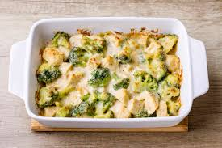

Chicken Broccoli Bake

This is a recipe that my dad always used to make whenI was a youngin.
It's a simple yet very yuummy recipe that the entire family will enjoy.
Preparation time is minimal which allows for more time spent enjoying each others company.
Get ready to have your taste buds delighted and be prepared to want a second helping.
Ingredients
- 2 cups chopped cooked broccoli
- 2 cups cubed/shredded cooked chicken
- 2 cups soft bread cubes
- 2 cups grated processed sharp or american cheese (We have always used Velveeta)
- 1 jar (12 oz.) Heinz HomeStyle Chicken Gravy
- 1/2 cup undiliuted evaporated milk
- A dash of pepper
Let's bake this dish!!
- Preheat oven to 375 degrees
- Butter a 9 x 9 x 1 3/4in baking pan
- Layer broccoli, chicken, bread cubes and cheese
- Combine gravy, milk, and pepper and pour over mixture
- Bake for 40 mins
- Let stand for at least 5 mins
- Serve and EAT!